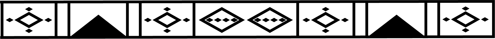

ANTIGÜEDADES


Tinaja Prehispánica
Con más de 1.500 años de antigüedad, esta tinaja fue elaborada por los antiguos zenúes para transportar o guardar agua. Está hecha de barro modelado a mano y cocido al fuego, con paredes gruesas que ayudaban a mantener el líquido fresco.


Figura precolombina
Esta escultura representa a un hombre en estrecha relación con un caimán, símbolo importante en la cosmovisión Zenú. Refleja la conexión espiritual y cultural que el pueblo Zenú mantenía con la naturaleza, especialmente con los animales del río, considerados protectores, guías o ancestros. Este tipo de figura también revela aspectos de los mitos, rituales y el respeto profundo por el entorno natural que caracterizaba a esta civilización.